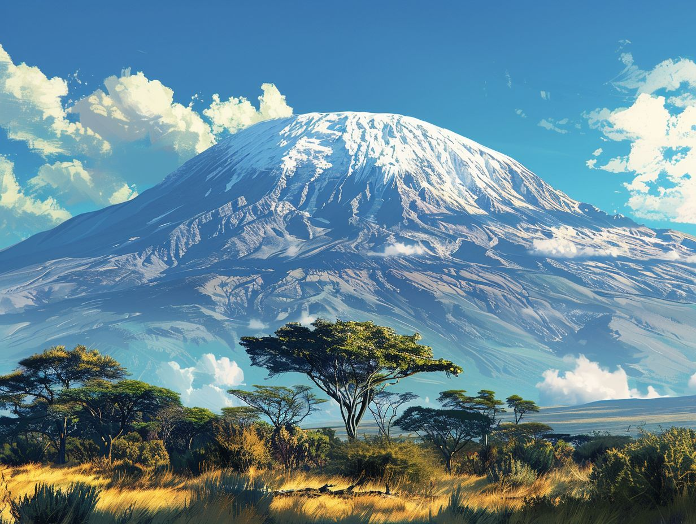

The jewel of Africa: Kilimanjaro
At 5,895m elevation, you worries should be forgotten at home!
Mount Kilimanjaro (/ˌkɪlɪmənˈdʒɑːroʊ/)[3] is a dormant volcano in Tanzania. It is the highest mountain in Africa and the highest free-standing mountain above sea level in the world: 5,895 m (19,341 ft) above sea level and 4,900 m (16,100 ft) above its plateau base. It is also the highest volcano in the Eastern Hemisphere and the fourth most topographically prominent peak on Earth
Buy tickets More infoFor the true mountaineer!

Mount Fuji is an active stratovolcano located on the Japanese island of Honshu, with a summit elevation of 3,776.24 m (12,389 ft 3 in).
Mont Blanc is the highest mountain in the Alps and Western Europe, and the highest mountain in Europe outside the Caucasus Mountains, rising 4,805.59 m above sea level.
Still not convinced? The only that remains, is to go and try it out for yourselves, or subscribe to out newsletter!